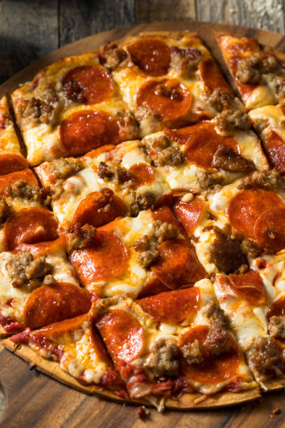

Pizza is a beloved dish that originated in Italy and has become a popular staple all over the world. It typically consists of a flat, round dough base, which is covered in tomato sauce, cheese, and a variety of toppings such as meats, vegetables, and herbs. The crust can be thin and crispy or thick and doughy depending on regional variations and personal preferences. Pizza can be enjoyed as a quick snack, a meal with friends and family, or as a party food. It has become so popular that there are countless variations and flavors available, from classic Margherita to experimental combinations like pineapple and ham. Whether you like it simple or loaded with toppings, pizza is a versatile and satisfying food that is enjoyed by millions of people worldwide pizza, is a popular variation of pizza that is made without any meat or seafood toppings. It typically features a variety of vegetables such as mushrooms Pizza is a beloved dish that originated in Italy and has become a popular staple all over the world. It typically consists of a flat, round dough base, which is covered in tomato sauce, cheese, and a variety of toppings such as meats
Vegetarian pizza, or veg pizza, is a popular variation of pizza that is made without any meat or seafood toppings. It typically features a variety of vegetables such as mushrooms, onions, bell peppers, olives, tomatoes, and artichokes, as well as herbs
Buy herePepperoni pizza is a classic and popular variation of pizza that is enjoyed all over the word It typically features a tomato sauce base, mozzarella cheese, and slices of pepperoni, a spicy and cured type of Italian sausage made from beef or pork.
Buy here
Cheese pizza, also known as a Margherita pizza, is a classic and simple variation of pizza that is loved by many. It typically features a tomato sauce base, mozzarella cheese, and herbs like basil and oregano. The cheese is the star of the show in a cheese pizza,.
Buy hereHawaiian pizza is a popular variation of pizza that originated in Canada and is now enjoyed all over the world. It typically features a tomato sauce base, mozzarella cheese, ham, and pineapple. and artichokes, as well as herbs like as well as herbs like
Buy here